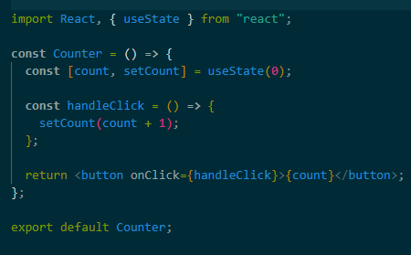

Ответ: Оператор сложения с присваиванием (+=) добавляет значение правого операнда к переменной и присваивает переменной результат. Таким образом, мы присвоим переменной title значение равное title + description и выведем его в span.
Ответ: UNSAFE_componentWillReceiveProps(nextProps). Этот метод вызывается каждый раз, когда компонент получает новые значения props. Вы можете сравнить текущие и новые значения props и выполнить нужные действия в зависимости от изменений.
Ответ: объекты в JavaScript являются ссылочными значениями, их нельзя просто скопировать с помощью =. При использовании =, указатель копируется в область занимаемой памяти. И при попытке внести изменения в новый объект, такие же изменения будут внесены в первоначальный объект. При помощи spread suntax (...) происходит клонирование объекта, и изменение нового объекта не вызывает изменения исходного. Правда такое клонирование - поверхностное и не подходит для вложенных или многомерных объектов и массивов.
Ответ: componentDidMount()
Ответ: static getDerivedStateFromError(error) и componentDidCatch(error, info). Используйте static getDerivedStateFromError() при рендеринге запасного UI в случае отлова ошибки. Используйте componentDidCatch() при написании кода для журналирования информации об отловленной ошибке.
Ответ:
constructor(props) {
super(props);
this.state = { date : new Date(),
clickedStatus: false }; }
Используется для инициализации (создании) компонента, для
установления первоначального состояния и для привязка обработчиков
событий к экземпляру.
Ответ: Задачей этой функции является определение того, что будет выведено на экран, то есть того, как будет выглядеть компонент. Функция render() в процессе жизни компонента может быть вызвана множество раз. Так, когда React определяет, что что-то, относящееся к компоненту, изменилось, наподобие состояния или свойств, то есть что-то такое, что может повлиять на внешний вид компонента, React может вызвать этот метод.
Ответ:
Ответ: Для нескольких задач можно использовать несколько useEffect для одного и того же компонента. Можно разделить работу на части и назначить useEffect для каждой. Назначение useEffect на короткие и одноцелевые функции предотвращает нежелательную повторную визуализацию и позволяет сохранить код чистым и читабельным.
Ответ: можно. Сработает функция, переданная в качестве первого аргумента. И будет срабатывать каждый раз при рендеринге.
Ответ: Возвращение функции в теле хука useEffect (cleanup-функции) означает, что эта функция будет выполнена при очистке (отмонтировании) компонента.
Ответ: да. Вызов forceUpdate() приведет к вызову render() для компонента, пропуская shouldComponentUpdate(). Это вызовет обычные методы жизненного цикла для дочерних компонентов, включая метод shouldComponentUpdate() каждого дочернего компонента. React по-прежнему будет обновлять DOM только при изменении разметки.
Ответ: 